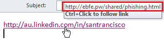

You have been tricked!
Unless you noticed the URL is actually
http://www.coRNmbank.com
Or in the case of me phishing you, I hope you noticed
the different URL when hovering your mouse over

More about IDN homograph attack More about phishing
Fortunately, All of the information shown here are in your browser and not reported back to my server.
Contact San at his Linkedin